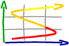

|  | . |
Étes-vous
créatif et si oui de quel type ? |
||
(Voir L'Intelligence
créative au-delà du brainstorming, p. 24) |
||
|
Ce
test, conçu par Jean-Louis Sellier, a paru dans Psychologie
n° 86 de mars 1977. Il s'appuie notamment sur le Test de pensée
créative de Torrance ; et le Test de classification et de sélection
des créativités de Louis Astruc (Librairie Maloine,
1972). |
Nous le publions néanmoins avec beaucoup de réserves. Il
est strictemment individuel. Il apparait, après en avoir parlé
avec Louis Astruc, qu'il ne peut détecter que trois types de créativité
sur sept (il n'est pas capable, par exemple, de déceler les « solutionneurs
»), etc. Mais il a le mérite, d'une part, de mettre en évidence qu'il y a plusieurs types de créativité (et qu'il n'y a aucun rapport entre celle de Pasteur, celle de Poincaré et d'Einstein et celle d'Edison, par exemple) et, d'autre part, d'être basé sur une psychogenèse de la créativité, c'est-à-dire sur la formation et la détermination d'un type de tempérament créatif par l'environnement parental dès la petite enfance et ceci de façon irréversible. |
| Lisez
chacune des 57 propositions ci-dessous. |
| Vous trouverez la grille de dépouillement page suivante >> |
1 3 |
|
11 19 Aussi loin que vous remontiez dans vos souvenirs, vous n'avez jamais douté réellement de vos capacités, vous avez toujours su que vous étiez appelé tôt ou tard à réaliser quelque chose qui sorte un peu de l'ordinaire. oui non |
| 20 En général, vous avez pour principe de n'accorder que peu d'attention aux petites choses, aux détails secondaires. Seuls les problèmes importants, vitaux, sont susceptibles d'éveiller durablement votre intérêt. oui non 21 Quand vous écoutez une conférence, quand vous lisez un article, vous n'êtes pas bon public, votre sens critique fonctionne presque automatiquement et vous êtes amené très vite à dépister la faille du raisonnement, la tentative démagogique, la propagande ou la publicité occulte. oui non 22 Dans l'ensemble, vous êtes indifférent à l'argent : si vous en avez beaucoup, vous le dépensez ; si vous avez peu, vous savez vous en passer oui non 23 Très franchement, de ces deux informations, laquelle a le plus de chance de vous toucher personnellement lorsque vous en prenez connaissance ? A Grave tremblement de terre aux antipodes ; B Augmentation massive des impôts pesant sur la catéogrie sociale à laquelle vous appartenez. A B 24 Vous admettez difficilement qu'une personne de votre entourage se charge à votre place de régler un problème qui vous concerne (par exemple, des formalités auxquelles vous n'entendez rien). oui non 25 Vous avez le sentiment que la plupart des gens ne savent pas profiter de la vie, qu'ils consacrent une trop grande part de leur temps, de leur énergie, de leurs ressources à des activités factices ou stériles. oui non 26 Au cours de votre adolescence, il vous est souvent arrivé d'être en désaccord total avec les opinions qui prévalaient dans votre famille (mais sans que cela vous empêche de maintenir avec celle-ci des liens affectifs satisfaisants) oui non 27 Vous adorez les enfants et attachez beaucoup de prix aux liens familiaux en général : vous ne vous perdez jamais dans les liens de parenté, vous connaissez l'âge des enfants de vos proches parents et de vos amis, vous savez ce qui leur fera plaisir quand vous voulez leur faire un cadeau, comment ils occupent leurs vacances, etc. oui non 28 Vous ne supportez pas d'être dérangé dans votre travail, vous avez horreur du bruit et de l'agitation, et vous appréciez que vos proches sachent préserver votre tranquillité. oui non 29 Vous estimez qu'il serait bon de mettre fin à des coutumes dont le sens est perdu, à des formalités dont l'utilité n'est pas démontrée ; vous ne verriez aucun inconvénient à ce que l'on supprime, par exemple, les formules de politesse au bas des lettres. oui non |
30 Vous êtes plutôt sceptique, incrédule, vous ne croyez que ce que vous avez vérifié par vous-même. oui non 31 Objectivement, vous pensez que vous êtes au moins aussi ordonné, pré-voyant, ponctuel que la plupart des gens que vous connaissez. oui non 32 On vous a dit parfois que vous ne faisiez rien comme tout le monde et que vos façons de procéder, même dans la vie quotidienne, se distin-guaient nettement du comportement habituel des gens qui vous entourent oui non 33 Vous estimez que l'on devrait accorder plus d'attention au, respect de certaines règles quand cèlles-ci sont bonnes, de manière à obtenir qu'elles soient effectivement observées (par exemple, les lois qui visent à réprimer certains abus ou délits). oui non 34 Lorsque vous entreprenez un travail d'une certaine ampleur, vous pataugez un peu au début, vos idées ne peuvent se mettre en place que progressivement. oui non 35 Vous préférez travailler en équipe, dans un groupe d'amis ou de collègues qui se connaissent et s'apprécient, plutôt que de mener un effort solitaire, livré à vos seules ressources. oui non 36 Il vous arrive d'être distrait dans les gestes de la vie courante ou d'être un peu absent, perdu dans vos pensées, lorsque vous vous trouvez en société. oui non 37 Bien que vous ne cherchiez nullement à choquer ou à provoquer autrui, il vous arrive de vous faire remarquer, d'attirer les regards, de surprendre les autres par votre façon d'agir ou de parler. oui non 38 Vous progressez beaucoup plus vite par l'expérience et l'observation personnelles que par l'étude des théories des autres. oui non 39 Quand vous vous apercevez qu'une personne tente de vous influencer, de vous circonvenir d'une façon insidieuse, votre premier « réflexe » est d'agir dans un sens exactement opposé à celui où l'on voudrait vous mener. oui non |
|
50 Au cours d'une conversation, vous avez toujours des répliques très promptes ; vos meilleures ripostes sont celles que vous improvisez dans le feu de la discussion. Vous parvenez habituellement à trouver du premier coup la meilleure formulation de vos idées. oui non 51 Il vous est arrivé d'abuser de la bonne volonté d'autrui, sans vous en rendre compte, en toute bonne foi. oui non 52 Lorsque vous attaquez un problème ardu, il est rare que la première solution qui se présente à votre esprit soit la meilleure ; c'est seulement après coup que vous trouvez la clé du problème. oui non 53 Vous avez la réputation d'être quelqu'un qui a le sens des affaires. oui non 54 l'énoncé d'une théorie à la première lecture ; pour bien la comprendre, il vous faut la reconstruire par vous-même, pour votre propre compte. oui non 55 Lorsque les circonstances vous obligent à changer brusquement de milieu ou d'activité, vous vous sentez un peu désorienté au début, il vous faut un certain temps pour vous familiariser avec votre nouvel environnement. oui non 56 Vous avez souvent constaté que des idées erronées étaient propagées et enracinées dans l'opinion à cause de l'argument d'autorité (c'est-à-dire à cause de la réputation de celui qui les avait émises pour la première fois). oui non 57 Il y a peut-être des sujets sur lesquels vous vous savez particulièrement ignorant ; certains domaines de connaissance vous sont relativement fermés ; mais cette ignorance ne vous pèse pas trop, car vous ne considérez pas comme essentiel d'avoir des « clartés de tout ». oui non |
| Quinze idées pour avoir des idées | Plan général | Les trois indexes | Menu Les tests |
| ©2004, 2005 Jean–Louis Swiners et Jean-Michel Briet | Dernière
mise à jour : 23/01/05 |